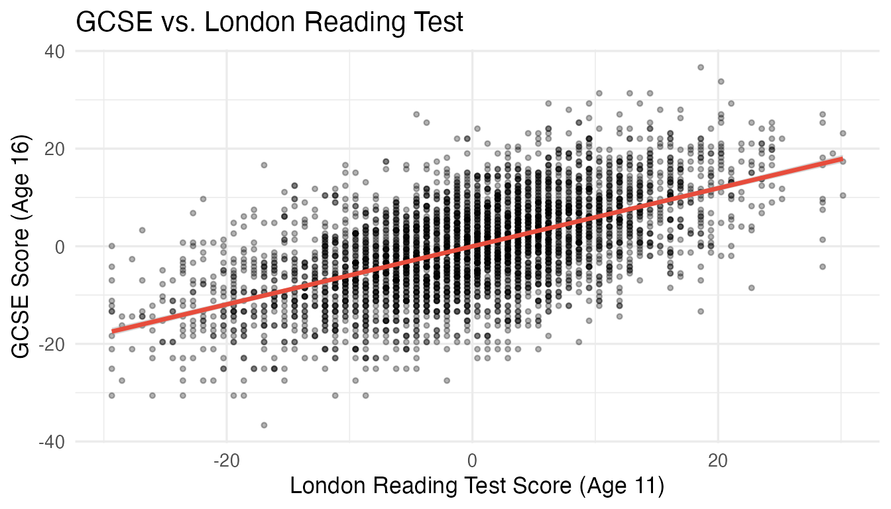
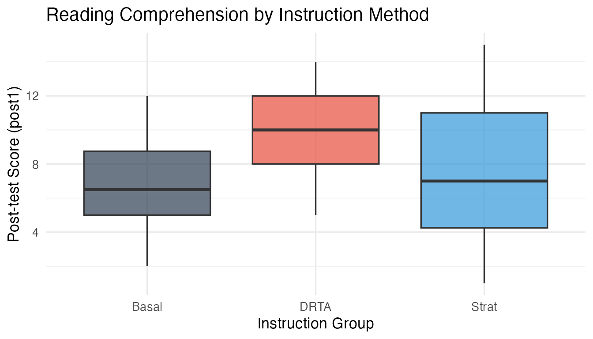

Installation
Install the development version of regdatasets from GitHub:
# install.packages("devtools")
devtools::install_github("joonho112/regdatasets")Loading Datasets
All 25 datasets are available via the standard data()
function:
library(regdatasets)
# Load a single dataset
data(gcse)
head(gcse)
#> # A tibble: 6 × 6
#> school student gcse lrt gender pred
#> <int> <int> <dbl> <dbl> <int> <dbl>
#> 1 1 143 2.61 6.19 1 0.785
#> 2 1 145 1.34 2.06 1 0.504
#> 3 1 142 -17.2 -13.6 0 -0.567
#> 4 1 141 9.68 2.06 1 0.504
#> 5 1 138 5.44 3.71 1 0.616
#> 6 1 155 17.3 21.9 0 1.86Every dataset is stored as a tibble, so it prints cleanly and works seamlessly with the tidyverse:
class(gcse)
#> [1] "tbl_df" "tbl" "data.frame"Exploring a Dataset
Use ?dataset_name to view the full documentation,
including variable descriptions, sources, and example analyses:
?gcse
?berkeley
?crimeExample: Simple Linear Regression
The gcse dataset is the primary running example for
Chapters 1–2. It contains GCSE exam scores and London Reading Test (LRT)
scores for 4,059 students in 65 London secondary schools:
# Fit a simple linear regression
model <- lm(gcse ~ lrt, data = gcse)
summary(model)
#>
#> Call:
#> lm(formula = gcse ~ lrt, data = gcse)
#>
#> Residuals:
#> Min 1Q Median 3Q Max
#> -26.5617 -5.1847 0.1265 5.4397 29.7399
#>
#> Coefficients:
#> Estimate Std. Error t value Pr(>|t|)
#> (Intercept) -0.01195 0.12642 -0.095 0.925
#> lrt 0.59506 0.01273 46.744 <2e-16 ***
#> ---
#> Signif. codes: 0 '***' 0.001 '**' 0.01 '*' 0.05 '.' 0.1 ' ' 1
#>
#> Residual standard error: 8.054 on 4057 degrees of freedom
#> Multiple R-squared: 0.35, Adjusted R-squared: 0.3499
#> F-statistic: 2185 on 1 and 4057 DF, p-value: < 2.2e-16
library(ggplot2)
ggplot(gcse, aes(x = lrt, y = gcse)) +
geom_point(alpha = 0.3, size = 1) +
geom_smooth(method = "lm", color = "#E74C3C", se = TRUE) +
labs(
title = "GCSE vs. London Reading Test",
x = "London Reading Test Score (Age 11)",
y = "GCSE Score (Age 16)"
) +
theme_minimal(base_size = 13)
GCSE scores vs. LRT scores with fitted regression line.
Example: Logistic Regression
The berkeley dataset demonstrates Simpson’s paradox —
the reversal of an apparent gender bias after controlling for
department:
data(berkeley)
# Unadjusted model
crude <- glm(admitted ~ female, family = binomial, data = berkeley)
# Adjusted model (controlling for department)
adjusted <- glm(admitted ~ female + factor(department),
family = binomial, data = berkeley)
# Compare odds ratios
exp(coef(crude)["female"]) # Crude OR
#> female
#> 0.6394079
exp(coef(adjusted)["female"]) # Adjusted OR
#> female
#> 0.9697744The crude odds ratio suggests female applicants are disadvantaged, but after adjusting for department the effect essentially disappears — a classic example of confounding.
Example: One-way ANOVA
The reading dataset compares three reading instruction
methods:
data(reading)
# ANOVA via regression with dummy variables
model_anova <- lm(post1 ~ factor(group), data = reading)
anova(model_anova)
#> Analysis of Variance Table
#>
#> Response: post1
#> Df Sum Sq Mean Sq F value Pr(>F)
#> factor(group) 2 108.12 54.061 5.3174 0.007347 **
#> Residuals 63 640.50 10.167
#> ---
#> Signif. codes: 0 '***' 0.001 '**' 0.01 '*' 0.05 '.' 0.1 ' ' 1
ggplot(reading, aes(x = factor(group), y = post1, fill = factor(group))) +
geom_boxplot(alpha = 0.7, show.legend = FALSE) +
scale_fill_manual(values = c("#2C3E50", "#E74C3C", "#3498DB")) +
labs(
title = "Reading Comprehension by Instruction Method",
x = "Instruction Group",
y = "Post-test Score (post1)"
) +
theme_minimal(base_size = 13)
Post-test scores by instruction group.
Available Datasets
For a complete list of all 25 datasets and their chapter mappings, see the Dataset Overview article.
# List all datasets in the package
data(package = "regdatasets")$results[, c("Item", "Title")]
#> Item
#> [1,] "alcohol1_pp"
#> [2,] "berk_sub"
#> [3,] "berkeley"
#> [4,] "civic_ed"
#> [5,] "classdata_07"
#> [6,] "crime"
#> [7,] "disc"
#> [8,] "disc2"
#> [9,] "faculty"
#> [10,] "gcse"
#> [11,] "grades"
#> [12,] "gss_1"
#> [13,] "hsb_sub"
#> [14,] "hsbs1"
#> [15,] "individuals"
#> [16,] "instruction"
#> [17,] "lambert"
#> [18,] "nels_data"
#> [19,] "penalty"
#> [20,] "pisa2000"
#> [21,] "reading"
#> [22,] "satisfaction"
#> [23,] "titanic"
#> [24,] "womenlf"
#> Title
#> [1,] "Adolescent Alcohol Use Person-Period Data"
#> [2,] "UC Berkeley Graduate Admissions Subset (Engineering and Psychology)"
#> [3,] "UC Berkeley Graduate Admissions Data (Five Departments)"
#> [4,] "Civic Education Study: Pre-Post Survey Data"
#> [5,] "Class Survey Data (2007)"
#> [6,] "Florida County Crime Rates"
#> [7,] "NELS:88 Discipline and School Experiences Study"
#> [8,] "NELS:88 Discipline Study with Achievement Scores"
#> [9,] "Faculty Salary Data"
#> [10,] "GCSE and London Reading Test Data"
#> [11,] "Essay Grades and Writing Features"
#> [12,] "General Social Survey Data"
#> [13,] "High School and Beyond Subset"
#> [14,] "High School and Beyond Survey (Full Sample)"
#> [15,] "Bureau of Labor Statistics March 2000 CPS Individual Data"
#> [16,] "Reading Instruction Methods Study"
#> [17,] "Lambert Longitudinal Study Data"
#> [18,] "National Education Longitudinal Study of 1988 (NELS:88)"
#> [19,] "Death Penalty Sentencing Data"
#> [20,] "PISA 2000 International Reading Assessment Data"
#> [21,] "Reading Comprehension Instruction Experiment"
#> [22,] "Satisfaction Survey Data"
#> [23,] "Titanic Passenger Survival Data"
#> [24,] "Canadian Women's Labor Force Participation"